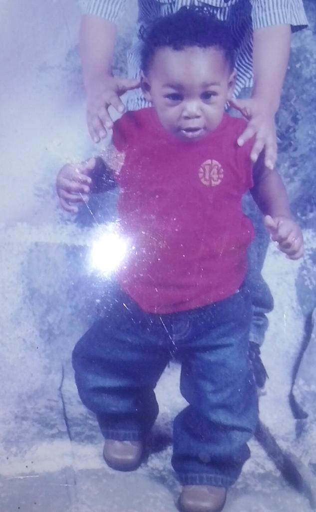

About a little book i read
After reading Twelve Pillars by Jim Rohn and Chris Widener I can say it has made look on life a little differently.
The main benefit of setting goals is the drive it gives you to achieve them. There are numerous possibilities each day,
but only one best one, so avoid hanging out with the easy crowd if you want to advance in life. Go where there are high
standards and performance requirements.
My current degree is computer science and my top 3 skills: perseverance, creativity and communication
As I mentioned, I was born with a defect called blount's disease. My brother grew out of it and for some
reason only my left leg grew out of it and my right leg said bent. I started going to hospital and had my first s
urgery around grade 2 for the first time. It was horrible (like it got any better) but I was ill prepared.
Surgery took me out of school for 6 months I was supposed to repeat but they said I was smart enough to continue.
Things were looking good till I grew some more, and the right leg started bending again so surgery again at grade 5
out of school again said I’m fine to continue again. Skip forward till grade 8 did a minor surgery on the left leg
doctors wanted to make sure the left leg doesn’t start bending. Now in grade 9 another surgery I’ve lost count how
many I’ve done at this point. I had to repeat this time. That’s a short story. I could go further but I won’t
bore you any longer.
